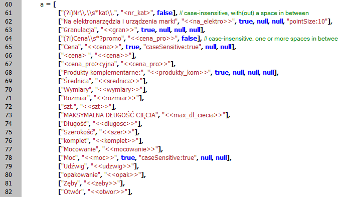
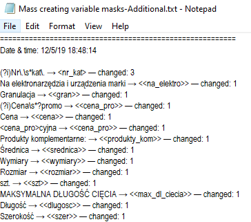
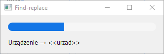
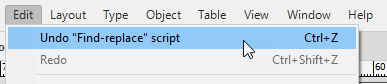

Find-replace
Script for InDesign. Written and tested by Kasyan in InDesign 2020.
Originally, the script was written on request of my client for mass creating variable masks to be used by data merge (he makes multi language catalogs), but I thought it would be useful for others as well. It is quite simple so anyone with basic knowledge of scripting (or even without it, simply following the examples) can rework it to his/her needs. (In other words, just replace it with the find-replace stuff you need). At the same time, it’s powerful because it allows using all available parameters.
I included a couple of the before and after sample documents, I used for testing, into the package so you could see how it works and test it yourself.
It has a sort of a data base – an array of arrays. Each sub-array can contain from two to six elements: elements 1-2 are required, and 3-6 are optional.
In most cases, only the first two elements are enough – findWhat and changeTo – for simple TEXT find-replace operations.

Here are the parameters (aka elements):
1 — findWhat (required)
2 — changeTo (required)
3 — true for TEXT (or if missing); false for GREP (optional)
4 — FindChangeText/GrepOption (optional)
5 — FindText/GrepPreference (optional)
6 — ChangeText/GrepPreference (optional)
The 3-rd parameter is used to choose between text or grep.
Parameters 4-6 use the same syntax as the properties object written as string which is evaluated by the script, in the following format:
"someParameter:10, anotherParameter: 'blah-blah-blah', yetAnotherParameter:true"
Note:
- the whole string is enclosed in double quotes
- elements are delimited by commas
- parameters and values are separated by a colon – parameter:value
- to set a string within string (e.g. for a value), use combination of double and single strings: for example, double for outer quotes and single for inner.
Here are a few examples:
["(?i)Nr\\.\\s*kat\\.", "<nr_kat>", false]
["Cena", "<<cena>>", true, "caseSensitive:true", null, null]
An example of referencing a paragraph style:
["Cena", "<<cena>>", true, "caseSensitive:true", null, "appliedParagraphStyle:doc.paragraphStyles.item('Header')"]
An example of referencing a paragraph style in a paragraph style group:
["Cena", "<<cena>>", true, "caseSensitive:true", null, "appliedParagraphStyle:doc.paragraphStyleGroups.item('My headers').paragraphStyles.item('Header')"],
["Granulacja", "<<gran>>", true, null, null, null] is exactly the same as ["Granulacja", "<<gran>>"]
if only two elements in a sub-array, TEXT search is performed by default
If you don’t need to set a parameter add null (or undefined, or simply add a comma to create an empty element.
For instance, here I set the font size for change format (changeTextPreferences) which is the last element. That’s why I had to set all the six parameters using null for the 4-th and 6-th elements which I don’t use.
["Na elektronarzędzia i urządzenia marki", "<<na_elektro>>", true, null, null, "pointSize:10"]
The script creates a log on the desktop which is useful for debugging and, probably, to keep track of changes.

Important notes:
- As in every array, all sub-arrays (elements) within the enclosing array should be delimited by a comma. Make sure to have no comma after the last element!
- If you don’t know how to write parameters (e.g. special GREP characters should be escaped by double back-slashes in script), select the settings you want in the find-replace dialog box in InDesign and record them with the Record Find Change written by Martin Fisher.
The script has a progress bar which displays the current find-change operation:

You can Undo-Redo the whole script:

Let’s sum it up:
- The script is easy to edit and keep track of what’s going on via log
- Also, it allows you to use any available parameters which makes it quite advanced
Click here to download the script and sample documents.